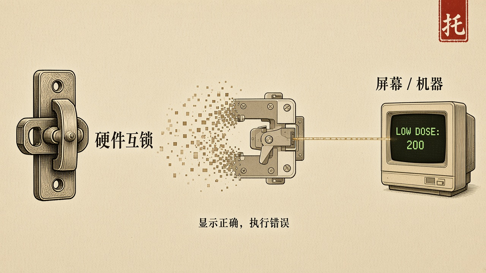
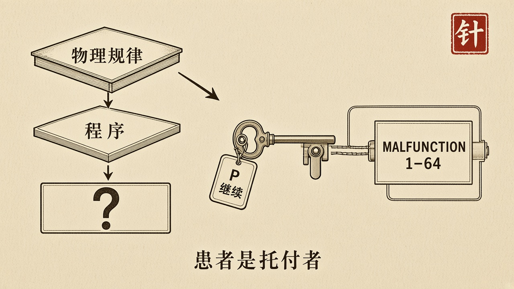

经过
Therac-25 是加拿大原子能公司（AECL）的双模医用直线加速器，用于对肿瘤施以精确剂量的放射治疗。前身 Therac-6 与 Therac-20 都内置硬件互锁：操作员选择某种治疗模式时，硬件强制机器处于相应的安全状态。设计 Therac-25 时，AECL 做了一个当时看来是进步的决定——取消硬件互锁，改用软件保证安全。理由充分：软件更灵活，可以做出比硬件更精细的判断。这是技术上的飞跃，也是一次信任转移：从「我们相信物理规律」转向「我们相信一段程序」。
1985 年 6 月至 1987 年 1 月，先后有六名病人在治疗中受到约一百倍于预期剂量的辐射。他们遭受严重灼伤，其中三人死亡。病人们事后描述一种强烈的电击般灼烧感。调查指向竞态条件：当操作员在约八秒的模式切换窗口内，以特定的过快顺序输入按键时，软件与硬件之间的状态失去同步。屏幕显示的是正确的低剂量设定，机器实际上已经切换到高能射线束；本应被硬件互锁挡住的关键部件，已经被移除。代码复用自旧型号，原先由硬件互锁掩盖的缺陷，在取消互锁之后暴露。PDP-11 汇编由一人多年编写，没有独立代码审查。
处理方式同样属于关节。错误码只显示 “MALFUNCTION” 加一个从 1 到 64 的数字，手册里没有解释。面对不明确的错误提示，操作员按下 “P” 键——继续。起初 AECL 否认投诉。那份把「计算机选错能量」的发生概率估为十亿分之一的安全分析，只考虑了硬件故障，没有考虑到软件本身就是那个会出错的部件。南希·莱文森后来把这一类事故写成系统事故：伤害来自交互，而不是一根可以被拔掉的坏线。

剖析
五条里，它几乎条条失守，但真正的原型不在「软件写错了」，在托付转移没有带着绳子。
明示的托付是患者的剂量：给出被处方的那一束，不得给出错误的高能束。禁区本应由硬件互锁钉在物理路径上。取消互锁之后，禁区被交给一段程序，却没有被绑在那次照射必经的检查上。屏幕与机器各说各话，就是对齐失败：写下的、显示的、跑着的、世界上发生在患者身上的，不是同一件事。可信性要求出示可被检验的论证。错误码无法被理解，安全分析把软件排除在故障树之外，论证从一开始就不是论证。可被追究的人被推到操作员按 “P” 的那一刻。把人锁在已经看不懂的提示前签字，不是让人承担使命，是让人在最不擅长的位置上背锅。
定义这一步把「更灵活」写成了进步，没有把「不得给出错误的高能束」写成不可绕过的禁区。对齐这一步让显示正确、执行错误可以同时成立。达成这一步把继续治疗当成默认。上线、能跑、前代机型用过，都不是达成。达成要问这一次照射是否仍在绳子上。六次事故里，局部看起来仍在治疗肿瘤。目的已经换成了另一束。
信任转移本身不是罪名。现代国家已经把剂量、间隔、清算交给软件，物理冗余在许多系统里正在被撤掉，因为软件更准、更省、更灵活。工程判断可以成立。代价是：失效那天再没有第二个可以对照的现实。Therac-25 值得记住的，不是一次技术事故，而是一连串必须被刻意经营的问题：为什么相信软件能取代物理防护；面对不理解的错误信息，为什么倾向于继续而不是停下；当系统出问题时，为什么那么难承认是软件错了。当一些东西越过能够理解的范围，信任就成了需要被经营的事情。今天面对的不是一台加速器，而是成千上万个潜在的、隐藏的同类问题。
